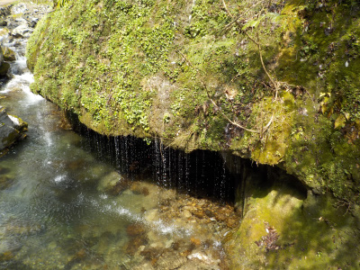
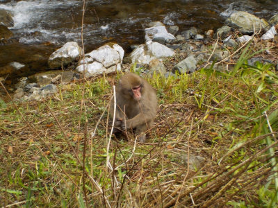
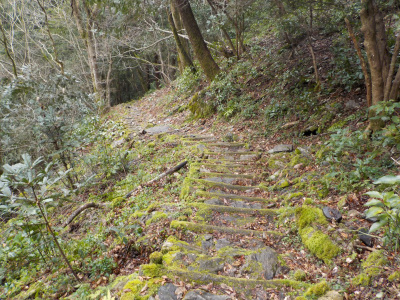
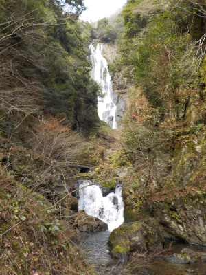

神庭の滝にお猿さんを見に行きました。
2020/03/15
動物園じゃない野生の日本猿が見たくて神庭の滝に行きました。

猿メインでしたが、景色が凄く良かったです。
上の写真は玉垂の滝です。
動画です。
とても癒される景色でした。

お猿さんはいろんな場所で遊んだりくつろいでいましたが、エサの時間になると食事に集中していました。
食事中じゃない方が可愛らしかったです。
エサをもらってるので野生な感じはあまりしませんでした。
食事中はこんなかんじです。
中には威嚇してくる猿がいて怖かったです。小人数で歩かず、まとまって歩いたほうが安全かなと思いました。
小さい子は抱っこしてあげたほうがよさそうです。

山道を登ると鬼の穴がありました。ちょっと急な坂なので、体力を消耗しました。
いい運動になりますが、体力を温存したい人は登らなくていいかな。
穴はそこそこ広かったです。基本、暗い横穴でした。

神庭の滝です。
写真や動画では迫力が伝わらないです。
実際に見に行くのが一番だと思いました。
また見に行きたいです。